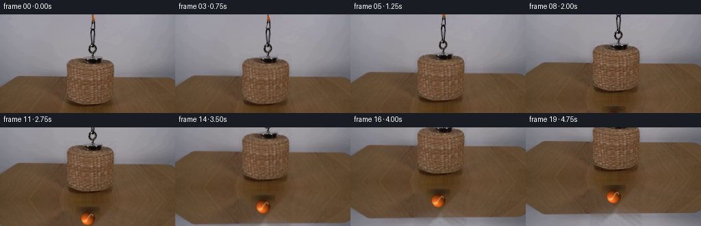
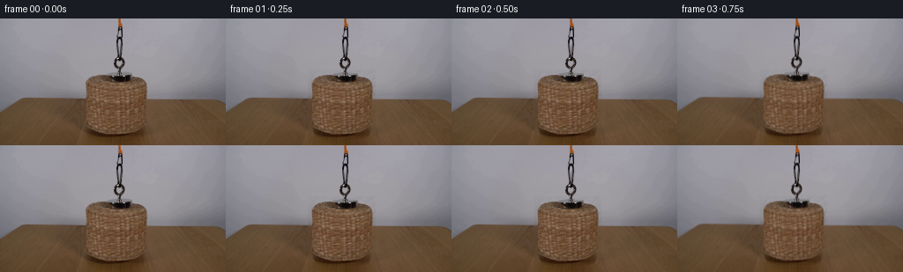
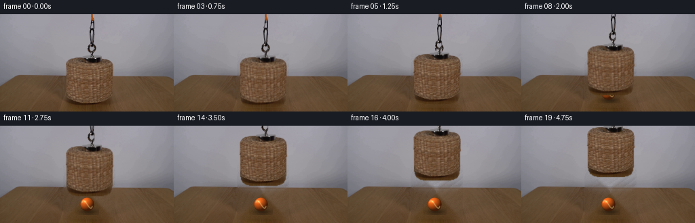
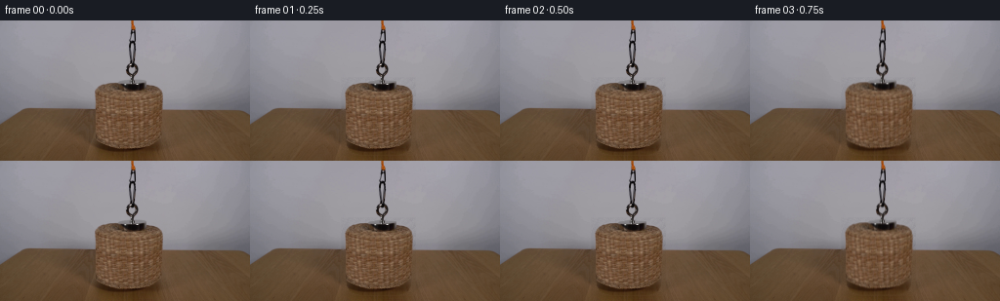

CODING AGENTS AS PIXEL WORLD MODELS
traex/DeepSeek-V4.1-Flash · 0170
点击播放 · 原生 RGB 像素
逐轮保存的候选
回放视频、检查图与代码变化。
每份候选均可单独播放。实际图片检查记录在下方工具轨迹中。
候选 01播放与检查图
点击播放 · 原生 RGB 像素


展开代码变化
--- 上一保存版本
+++ 本次保存版本
@@ -0,0 +1,302 @@
+"""Generate the 20-frame basket-lift demonstration.
+
+The opening frame is the supplied photograph. Later frames are built from
+numeric RGB operations only: reconstruct the occluded table/wall, render the
+tennis ball analytically, and move the original basket pixels as a sprite.
+"""
+
+from pathlib import Path
+
+import cv2
+import numpy as np
+from PIL import Image
+
+import artifact_io
+
+
+CASE_DIR = Path(__file__).resolve().parent
+WIDTH = 256
+HEIGHT = 144
+FRAMES = 20
+
+
+def _object_mask(shape):
+ """Broad mask used to reconstruct the background behind the apparatus."""
+ mask = np.zeros(shape, dtype=np.uint8)
+ mask[58:139, 93:170] = 255
+ mask[0:63, 124:148] = 255
+ return mask
+
+
+def _texture_from_sides(src, filled, region):
+ """Restore the fine photographic grain lost by color inpainting."""
+ x0, y0, x1, y1 = region
+ out = filled.copy()
+ rng = np.random.default_rng(170)
+ for y in range(y0, y1):
+ for x in range(x0, x1):
+ # Blend matching texture samples from the two clean side strips.
+ lx = 22 + ((x * 7 + y * 3) % 67)
+ rx = 172 + ((x * 5 + y * 7) % 66)
+ t = (x - x0) / max(1, x1 - x0 - 1)
+ left = src[y, lx].astype(np.float32)
+ right = src[y, rx].astype(np.float32)
+ texture = left * (1.0 - t) + right * t
+
+ # Keep the local horizontal illumination trend from the inpaint.
+ trend = cv2.GaussianBlur(
+ filled[y : y + 1, max(0, x - 5) : min(WIDTH, x + 6)],
+ (0, 0),
+ 2.0,
+ )[0, min(5, x)]
+ out[y, x] = np.clip(
+ 0.68 * filled[y, x] + 0.32 * (texture + filled[y, x] - trend),
+ 0,
+ 255,
+ ).astype(np.uint8)
+
+ # A whisper of camera noise keeps the repaired area from looking plastic.
+ noise = rng.normal(0.0, 1.35, (y1 - y0, x1 - x0, 1))
+ out[y0:y1, x0:x1] = np.clip(
+ out[y0:y1, x0:x1].astype(np.float32) + noise, 0, 255
+ ).astype(np.uint8)
+ return out
+
+
+def _clean_plate(src):
+ mask = _object_mask(src.shape[:2])
+ filled = cv2.inpaint(src, mask, 5, cv2.INPAINT_TELEA)
+ filled = _texture_from_sides(src, filled, (93, 58, 170, 139))
+
+ # Restore the table edge across the repaired area. The source edge sits
+ # between rows 90 and 92, with a soft transition rather than a hard line.
+ for x in range(93, 170):
+ left = src[89:94, 86].astype(np.float32)
+ right = src[89:94, 176].astype(np.float32)
+ t = (x - 86) / 90.0
+ edge = left * (1.0 - t) + right * t
+ filled[89:94, x] = np.clip(
+ 0.62 * filled[89:94, x].astype(np.float32) + 0.38 * edge, 0, 255
+ ).astype(np.uint8)
+
+ # Feather the repaired patch into the untouched photograph.
+ alpha = np.zeros((HEIGHT, WIDTH), dtype=np.float32)
+ alpha[58:139, 93:170] = 1.0
+ alpha = cv2.GaussianBlur(alpha, (0, 0), 1.4)
+ return np.clip(
+ src.astype(np.float32) * (1.0 - alpha[..., None])
+ + filled.astype(np.float32) * alpha[..., None],
+ 0,
+ 255,
+ ).astype(np.uint8)
+
+
+def _basket_alpha():
+ """Anti-aliased silhouette of the hanging cord, magnet, and basket."""
+ polygon = np.array(
+ [
+ (134, 0),
+ (137, 0),
+ (138, 8),
+ (142, 10),
+ (143, 24),
+ (143, 48),
+ (145, 57),
+ (149, 62),
+ (157, 65),
+ (162, 68),
+ (165, 72),
+ (166, 78),
+ (166, 91),
+ (165, 98),
+ (165, 121),
+ (164, 127),
+ (162, 132),
+ (158, 135),
+ (150, 137),
+ (112, 137),
+ (105, 135),
+ (101, 132),
+ (99, 127),
+ (98, 121),
+ (98, 94),
+ (97, 89),
+ (97, 75),
+ (100, 69),
+ (105, 65),
+ (114, 63),
+ (125, 62),
+ (130, 61),
+ (131, 56),
+ (129, 51),
+ (128, 45),
+ (129, 31),
+ (129, 15),
+ (131, 9),
+ (133, 7),
+ ],
+ dtype=np.int32,
+ )
+ alpha = np.zeros((HEIGHT, WIDTH), dtype=np.uint8)
+ cv2.fillPoly(alpha, [polygon], 255)
+
+ # Remove wall-colored pixels accidentally enclosed by the top silhouette.
+ wall = (
+ (alpha > 0)
+ & (np.indices(alpha.shape)[0] < 62)
+ & (np.indices(alpha.shape)[1] > 138)
+ )
+ alpha[wall] = 0
+ return cv2.GaussianBlur(alpha, (0, 0), 0.55)
+
+
+def _draw_ball_plate(clean):
+ """Render an orange tennis ball with a grounded contact shadow."""
+ scale = 4
+ out = clean.copy()
+ cx, cy, radius = 128.5, 116.5, 10.4
+
+ # Contact and ambient shadow on the tabletop.
+ sy0, sy1 = 121, 133
+ sx0, sx1 = 111, 146
+ yy, xx = np.mgrid[sy0:sy1, sx0:sx1]
+ shadow = np.exp(
+ -(((xx - (cx + 1.5)) / 15.0) ** 2 + ((yy - 128.0) / 4.8) ** 2)
+ )
+ shadow = cv2.GaussianBlur(shadow.astype(np.float32), (0, 0), 1.4)
+ out[sy0:sy1, sx0:sx1] = np.clip(
+ out[sy0:sy1, sx0:sx1].astype(np.float32)
+ * (1.0 - 0.48 * shadow[..., None]),
+ 0,
+ 255,
+ ).astype(np.uint8)
+
+ # Supersampled local sphere for clean edges and seam detail.
+ r = int(np.ceil((radius + 3) * scale))
+ gy, gx = np.mgrid[-r : r + 1, -r : r + 1].astype(np.float32) / scale
+ nx = gx / radius
+ ny = gy / radius
+ rr = nx * nx + ny * ny
+ inside = rr <= 1.0
+ nz = np.sqrt(np.clip(1.0 - rr, 0.0, 1.0))
+
+ light = np.array([-0.45, -0.62, 0.64], dtype=np.float32)
+ light /= np.linalg.norm(light)
+ diffuse = np.clip(nx * light[0] + ny * light[1] + nz * light[2], 0.0, 1.0)
+ diffuse = 0.30 + 0.78 * diffuse
+ rim = np.clip(nz, 0.0, 1.0) ** 0.28
+
+ base = np.array([225.0, 96.0, 25.0], dtype=np.float32)
+ warm = np.array([251.0, 151.0, 42.0], dtype=np.float32)
+ rgb = base[None, None, :] * diffuse[..., None]
+ rgb = rgb * (0.76 + 0.24 * rim[..., None])
+ rgb += warm[None, None, :] * (0.15 * np.clip(diffuse - 0.72, 0.0, 1.0))[..., None]
+
+ # Fuzzy felt modulation, deterministic and very fine.
+ rng = np.random.default_rng(31)
+ felt = rng.normal(0.0, 4.2, nz.shape)[..., None]
+ rgb += felt
+
+ # Two pale, slightly irregular tennis seams.
+ seam = np.zeros(nz.shape, dtype=np.float32)
+ for phase in (0.0, np.pi):
+ for t in np.linspace(-1.32, 1.32, 160):
+ qx = radius * 0.74 * np.sin(t + phase)
+ qy = radius * 0.55 * np.sin(2.0 * t + phase)
+ px = int(round((qx) * scale + r))
+ py = int(round((qy) * scale + r))
+ cv2.circle(seam, (px, py), int(0.55 * scale), 1.0, -1, cv2.LINE_AA)
+ seam = cv2.GaussianBlur(seam, (0, 0), 0.55 * scale)
+ seam *= inside.astype(np.float32)
+ rgb = rgb * (1.0 - 0.62 * seam[..., None]) + np.array(
+ [249.0, 221.0, 145.0]
+ )[None, None, :] * (0.62 * seam[..., None])
+
+ # A restrained soft specular highlight.
+ spec = np.exp(-(((nx + 0.34) / 0.22) ** 2 + ((ny + 0.40) / 0.18) ** 2))
+ spec *= inside
+ rgb += spec[..., None] * np.array([76.0, 68.0, 48.0])[None, None, :]
+
+ alpha = np.clip((1.0 - np.sqrt(rr)) * radius * scale * 0.85, 0.0, 1.0)
+ alpha *= inside
+ rgb = np.clip(rgb, 0, 255)
+
+ # Downsample the RGBA sphere and alpha-composite over the table.
+ h, w = gx.shape
+ rgb_u8 = np.clip(rgb, 0, 255).astype(np.uint8)
+ alpha_u8 = np.clip(alpha * 255.0, 0, 255).astype(np.uint8)
+ rgb_small = cv2.resize(rgb_u8, (w // scale, h // scale), interpolation=cv2.INTER_AREA)
+ alpha_small = cv2.resize(
+ alpha_u8, (w // scale, h // scale), interpolation=cv2.INTER_AREA
+ ).astype(np.float32) / 255.0
+ x0 = int(round(cx)) - (w // scale) // 2
+ y0 = int(round(cy)) - (h // scale) // 2
+ x1, y1 = x0 + w // scale, y0 + h // scale
+ dst = out[y0:y1, x0:x1].astype(np.float32)
+ out[y0:y1, x0:x1] = np.clip(
+ dst * (1.0 - alpha_small[..., None])
+ + rgb_small.astype(np.float32) * alpha_small[..., None],
+ 0,
+ 255,
+ ).astype(np.uint8)
+ return out
+
+
+def _lift_offset(frame_index):
+ """Smooth hold, acceleration, and settle over the five-second shot."""
+ if frame_index <= 2:
+ return 0.0
+ u = (frame_index - 2.0) / 17.0
+ eased = u * u * (3.0 - 2.0 * u)
+ return -70.0 * eased
+
+
+def generate():
+ src = np.asarray(Image.open(CASE_DIR / "first_frame.png").convert("RGB"), dtype=np.uint8)
+ assert src.shape == (HEIGHT, WIDTH, 3)
+
+ clean = _clean_plate(src)
+ ball_plate = _draw_ball_plate(clean)
+ alpha = _basket_alpha().astype(np.float32) / 255.0
+ sprite = src.astype(np.float32) * alpha[..., None]
+ frames = np.empty((FRAMES, HEIGHT, WIDTH, 3), dtype=np.uint8)
+
+ # The contract requires the exact source pixels for frame zero.
+ frames[0] = src
+
+ for index in range(1, FRAMES):
+ offset = _lift_offset(index)
+ matrix = np.array([[1.0, 0.0, 0.0], [0.0, 1.0, offset]], dtype=np.float32)
+ moved = cv2.warpAffine(
+ ball_plate,
+ matrix,
+ (WIDTH, HEIGHT),
+ flags=cv2.INTER_LINEAR,
+ borderMode=cv2.BORDER_REFLECT_101,
+ ).astype(np.float32)
+ moved_alpha = cv2.warpAffine(
+ alpha,
+ matrix,
+ (WIDTH, HEIGHT),
+ flags=cv2.INTER_LINEAR,
+ borderMode=cv2.BORDER_CONSTANT,
+ borderValue=0,
+ )
+ moved_sprite = cv2.warpAffine(
+ sprite,
+ matrix,
+ (WIDTH, HEIGHT),
+ flags=cv2.INTER_LINEAR,
+ borderMode=cv2.BORDER_CONSTANT,
+ borderValue=0,
+ )
+ frame = moved_sprite + moved * (1.0 - moved_alpha[..., None])
+ frames[index] = np.clip(frame + 0.5, 0, 255).astype(np.uint8)
+
+ return frames
+
+
+if __name__ == "__main__":
+ frames = generate()
+ artifact_io.save(frames, CASE_DIR)
+ Image.fromarray(frames[-1]).save(CASE_DIR / ".tmp" / "candidate_last.png")
候选 02播放与检查图
点击播放 · 原生 RGB 像素


展开代码变化
--- 上一保存版本
+++ 本次保存版本
@@ -157,11 +157,11 @@
cx, cy, radius = 128.5, 116.5, 10.4
# Contact and ambient shadow on the tabletop.
- sy0, sy1 = 121, 133
+ sy0, sy1 = 121, 132
sx0, sx1 = 111, 146
yy, xx = np.mgrid[sy0:sy1, sx0:sx1]
shadow = np.exp(
- -(((xx - (cx + 1.5)) / 15.0) ** 2 + ((yy - 128.0) / 4.8) ** 2)
+ -(((xx - (cx + 1.5)) / 13.0) ** 2 + ((yy - 126.8) / 3.7) ** 2)
)
shadow = cv2.GaussianBlur(shadow.astype(np.float32), (0, 0), 1.4)
out[sy0:sy1, sx0:sx1] = np.clip(
@@ -206,7 +206,7 @@
px = int(round((qx) * scale + r))
py = int(round((qy) * scale + r))
cv2.circle(seam, (px, py), int(0.55 * scale), 1.0, -1, cv2.LINE_AA)
- seam = cv2.GaussianBlur(seam, (0, 0), 0.55 * scale)
+ seam = cv2.GaussianBlur(seam, (0, 0), 0.42 * scale)
seam *= inside.astype(np.float32)
rgb = rgb * (1.0 - 0.62 * seam[..., None]) + np.array(
[249.0, 221.0, 145.0]
@@ -217,8 +217,13 @@
spec *= inside
rgb += spec[..., None] * np.array([76.0, 68.0, 48.0])[None, None, :]
- alpha = np.clip((1.0 - np.sqrt(rr)) * radius * scale * 0.85, 0.0, 1.0)
- alpha *= inside
+ # Felt has a fine, slightly soft perimeter instead of a vector-clean edge.
+ rng_edge = np.random.default_rng(91)
+ edge_jitter = rng_edge.normal(0.0, 0.018, nz.shape)
+ alpha = np.clip(
+ (1.0 - np.sqrt(rr) + edge_jitter) * radius * scale * 0.72, 0.0, 1.0
+ )
+ alpha *= (rr <= 1.04)
rgb = np.clip(rgb, 0, 255)
# Downsample the RGBA sphere and alpha-composite over the table.
@@ -248,7 +253,7 @@
return 0.0
u = (frame_index - 2.0) / 17.0
eased = u * u * (3.0 - 2.0 * u)
- return -70.0 * eased
+ return -62.0 * eased
def generate():
@@ -267,13 +272,7 @@
for index in range(1, FRAMES):
offset = _lift_offset(index)
matrix = np.array([[1.0, 0.0, 0.0], [0.0, 1.0, offset]], dtype=np.float32)
- moved = cv2.warpAffine(
- ball_plate,
- matrix,
- (WIDTH, HEIGHT),
- flags=cv2.INTER_LINEAR,
- borderMode=cv2.BORDER_REFLECT_101,
- ).astype(np.float32)
+ moved = ball_plate.astype(np.float32)
moved_alpha = cv2.warpAffine(
alpha,
matrix,
可观测工具轨迹
实际执行的命令与返回图片。
命令 1exit 0
/bin/bash -c "pwd && rg --files -g '"'!*.pyc'"' | sed -n '1,160p'"
命令 2exit 0
/bin/bash -c "sed -n '1,240p' GENERATION_RULES.md"
命令 3exit 0
/bin/bash -c "sed -n '1,240p' prompt.txt"
命令 4exit 0
/bin/bash -c 'file first_frame.png && identify first_frame.png 2>/dev/null || true && ls -lah'
命令 5exit 0
/bin/bash -c "sed -n '1,260p' artifact_io.py"
命令 6exit 0
/bin/bash -c "python - <<'PY'
from PIL import Image
import numpy as np
im=np.array(Image.open('first_frame.png').convert('RGB'))
print(im.shape, im.dtype, im.min(), im.max())
print('mean', im.mean((0,1)), 'std', im.std((0,1)))
# dominant quantized colors
q=(im//16)*16
u,c=np.unique(q.reshape(-1,3),axis=0,return_counts=True)
for i in np.argsort(c)[-30:][::-1]: print(c[i],u[i])
PY"命令 7exit 0
/bin/bash -c "python - <<'PY'
from PIL import Image
import numpy as np, colorsys
im=np.array(Image.open('first_frame.png').convert('RGB'))
# 4x4 mean cells -> 64x36
m=im.reshape(36,4,64,4,3).mean((1,3)).astype(int)
# symbols by hue/color and brightness
for y,row in enumerate(m):
s=''
for r,g,b in row:
h,sat,v=colorsys.rgb_to_hsv(r/255,g/255,b/255)
if v<.18: c='#'
elif sat<.10:
c='@' if v>.65 else ('O' if v>.43 else ('o' if v>.27 else '.'))
elif h<.08 or h>.94: c='R' if v>.42 else 'r'
elif h<.16: c='Y' if v>.45 else 'y'
elif h<.43: c='G' if v>.45 else 'g'
elif h<.72: c='B' if v>.45 else 'b'
else: c='P' if v>.45 else 'p'
s+=c
print(f'{y*4:03d} {s}')
PY"命令 8exit 0
/bin/bash -c "python - <<'PY'
try:
import cv2; print('cv2', cv2.__version__)
except Exception as e: print('no cv2',e)
try:
import scipy; print('scipy', scipy.__version__)
except Exception as e: print('no scipy',e)
PY"命令 9exit 0
/bin/bash -c "python - <<'PY'
from PIL import Image
import numpy as np, colorsys
im=np.array(Image.open('first_frame.png').convert('RGB'))
# 2x2 means; classify chars by luminance and saturation
m=im.reshape(72,2,128,2,3).mean((1,3)).astype(int)
chars=[]
for y,row in enumerate(m):
s=''
for r,g,b in row:
h,st,v=colorsys.rgb_to_hsv(r/255,g/255,b/255)
if v<.10:c='#'
elif st<.10:c='@' if v>.68 else ('O' if v>.48 else ('o' if v>.30 else '.'))
elif h<.08 or h>.93:c='R' if v>.40 else 'r'
elif h<.17:c='Y' if v>.43 else 'y'
elif h<.42:c='G' if v>.40 else 'g'
elif h<.70:c='B' if v>.40 else 'b'
else:c='P' if v>.40 else 'p'
s+=c
print(f'{y*2:03d} {s}')
PY"命令 10exit 0
/bin/bash -c "python - <<'PY'
from PIL import Image
import numpy as np
im=np.array(Image.open('first_frame.png').convert('RGB'))
# print representative center row RGB every 8 px
for y in [50,60,64,66,70,80,90,92,100,110,120,130]:
print(y,[tuple(v) for v in im[y,::8]])
PY"命令 11exit 0
/bin/bash -c "python - <<'PY'
import cv2, numpy as np
from PIL import Image
im=np.array(Image.open('first_frame.png').convert('RGB'))
lab=cv2.cvtColor(im,cv2.COLOR_RGB2LAB).reshape(-1,3).astype(np.float32)
crit=(cv2.TERM_CRITERIA_EPS+cv2.TERM_CRITERIA_MAX_ITER,100,0.3)
_,labels,cent=cv2.kmeans(lab,12,None,crit,10,cv2.KMEANS_PP_CENTERS)
labels=labels.reshape(144,256)
cent_rgb=cv2.cvtColor(cent.astype(np.uint8).reshape(-1,1,3),cv2.COLOR_LAB2RGB).reshape(-1,3)
for k in range(12):
ys,xs=np.where(labels==k)
print(k, 'n',len(xs),'bbox',xs.min(),ys.min(),xs.max(),ys.max(),'mean xy',xs.mean(),ys.mean(),'rgb',cent_rgb[k])
# boundaries by rows: colors/hue blocks compressed runs at key rows
PY"命令 12exit 0
/bin/bash -c "python - <<'PY'
import cv2,numpy as np
from PIL import Image
im=np.array(Image.open('first_frame.png').convert('RGB'))
g=cv2.cvtColor(im,cv2.COLOR_RGB2GRAY)
# contours threshold by saturation reddish
hsv=cv2.cvtColor(im,cv2.COLOR_RGB2HSV)
mask=((hsv[:,:,1]>55)&(hsv[:,:,2]>30)).astype(np.uint8)*255
# connected components
n,l,st,cent=cv2.connectedComponentsWithStats(mask)
for i in np.argsort(st[1:,4])[-20:][::-1]+1: print(i,st[i].tolist(),cent[i])
PY"命令 13exit 0
/bin/bash -c "python - <<'PY'
from PIL import Image
import numpy as np, colorsys
im=np.array(Image.open('first_frame.png').convert('RGB'))
# crop likely object 96:160,64:135 and print exact-ish symbols every pixel but rows every 2, cols every 1
for y in range(60,140,2):
s=''
for x in range(95,164):
r,g,b=im[y,x].astype(int)
h,st,v=colorsys.rgb_to_hsv(r/255,g/255,b/255)
if v<.10:c='#'
elif st<.10:c='@' if v>.68 else ('O' if v>.48 else ('o' if v>.30 else '.'))
elif h<.08 or h>.93:c='R' if v>.40 else 'r'
elif h<.17:c='Y' if v>.43 else 'y'
elif h<.42:c='G' if v>.40 else 'g'
elif h<.70:c='B' if v>.40 else 'b'
else:c='P' if v>.40 else 'p'
s+=c
print(f'{y:03d} {s}')
PY"命令 14exit 0
/bin/bash -c "python - <<'PY'
import cv2,numpy as np
from PIL import Image
im=np.array(Image.open('first_frame.png').convert('RGB'))
for yy in [0,50,62,64,66,90,92,94,132,134,143]:
row=im[yy].astype(float)
d=np.linalg.norm(np.diff(row,axis=0),axis=1)
ix=np.where(d>12)[0]
print(yy, [(int(x),round(float(d[x]),1),tuple(row[x].astype(int)),tuple(row[x+1].astype(int))) for x in ix[:50]])
PY"命令 15exit 0
/bin/bash -c "python - <<'PY'
from PIL import Image
import numpy as np, colorsys
im=np.array(Image.open('first_frame.png').convert('RGB'))
# smaller chars exact crop 100:160 x 62:136; sample every pixel x, 2 row
for y in range(62,136,2):
s=''
for x in range(100,160):
r,g,b=im[y,x].astype(int); h,st,v=colorsys.rgb_to_hsv(r/255,g/255,b/255)
if v<.13:c='#'
elif st<.10:c='@' if v>.68 else ('O' if v>.48 else ('o' if v>.30 else '.'))
elif h<.08 or h>.93:c='R' if v>.40 else 'r'
elif h<.17:c='Y' if v>.43 else 'y'
elif h<.42:c='G' if v>.40 else 'g'
elif h<.70:c='B' if v>.40 else 'b'
else:c='P' if v>.40 else 'p'
s+=c
print(f'{y:03d} {s}')
PY"命令 16exit 0
/bin/bash -c "python - <<'PY'
from PIL import Image
import numpy as np, colorsys
im=np.array(Image.open('first_frame.png').convert('RGB'))
for y in range(58,74,2):
s=''
for x in range(90,175):
r,g,b=im[y,x].astype(int); h,st,v=colorsys.rgb_to_hsv(r/255,g/255,b/255)
if v<.13:c='#'
elif st<.10:c='@' if v>.68 else ('O' if v>.48 else ('o' if v>.30 else '.'))
elif h<.08 or h>.93:c='R' if v>.40 else 'r'
elif h<.17:c='Y' if v>.43 else 'y'
elif h<.42:c='G' if v>.40 else 'g'
elif h<.70:c='B' if v>.40 else 'b'
else:c='P' if v>.40 else 'p'
s+=c
print(f'{y:03d} {s}')
PY"命令 17exit 0
/bin/bash -c "python - <<'PY'
from PIL import Image
import numpy as np
im=np.array(Image.open('first_frame.png').convert('RGB'))
# Vertical runs by row at x=128, 110, 150, etc
for x in [100,110,120,127,128,129,130,135,140,150,160]:
arr=im[:,x].astype(int)
d=np.linalg.norm(np.diff(arr,axis=0),axis=1)
ix=np.where(d>20)[0]
print('x',x,[(int(y),tuple(arr[y]),tuple(arr[y+1]),round(float(d[y]),1)) for y in ix[:30]])
PY"命令 18exit 0
/bin/bash -c "python - <<'PY'
from PIL import Image
import numpy as np
im=np.array(Image.open('first_frame.png').convert('RGB'))
# write PPM temporary inspection and maybe use sixel? no. ASCII of edges using Canny compact
import cv2
g=cv2.cvtColor(im,cv2.COLOR_RGB2GRAY)
e=cv2.Canny(g,30,80)
for y in range(0,144,3):
s=''
for x in range(0,256,2):
b=e[y:y+3,x:x+2].max()
s += '#' if b else ' '
print(s)
PY"命令 19exit 0
/bin/bash -c "python - <<'PY'
from PIL import Image
import numpy as np
im=np.array(Image.open('first_frame.png').convert('RGB'))
# median of top gray background for comparison, print 16x16 thumbnails around object as mean luminance ASCII finer 2x2
for y in range(56,140,2):
s=''
for x in range(88,176,1):
v=im[y:y+2,x:x+2].mean()
s+=' .:-=+*#%@'[min(9,int(v/25.6))]
print(s)
PY"命令 20exit 0
/bin/bash -c "python - <<'PY'
from PIL import Image
import numpy as np
im=np.array(Image.open('first_frame.png').convert('RGB'))
# coarse color labels every 2 pixels, object crop x92:172 y60:138, two pixels per char
for y in range(60,138,2):
s=''
for x in range(92,172,2):
r,g,b=im[y:y+2,x:x+2].mean((0,1))
if r>g*1.22 and r>b*1.45 and r>50:c='r' if r>115 else 'd'
elif b>r*1.05 and abs(r-g)<12:c='B' if r>120 else 'b'
elif max(r,g,b)<50:c='K'
else:c='.'
s+=c
print(f'{y:03d} {s}')
PY"命令 21exit 0
/bin/bash -c "python - <<'PY'
from PIL import Image
import numpy as np
im=np.array(Image.open('first_frame.png').convert('RGB'))
for x in range(128,142):
runs=[]; st=None
for y in range(144):
r,g,b=im[y,x]
on= max(r,g,b)<60
if on and st is None: st=y
if not on and st is not None: runs.append((st,y-1));st=None
if st is not None:runs.append((st,143))
print(x,runs)
PY"命令 22exit 0
/bin/bash -c "python - <<'PY'
import cv2, numpy as np
from PIL import Image
im=np.array(Image.open('first_frame.png').convert('RGB'))
# Save nearest and 4x upscale of crop? just crops .tmp/crop.png
Image.fromarray(im[55:140,85:175]).resize((540,510),Image.Resampling.NEAREST).save('.tmp/crop_nearest.png')
Image.fromarray(im[55:140,85:175]).resize((540,510),Image.Resampling.LANCZOS).save('.tmp/crop_smooth.png')
print('saved')
PY"命令 23exit 0
/bin/bash -c "python - <<'PY'
from PIL import Image
import numpy as np
im=np.array(Image.open('first_frame.png').convert('RGB')).astype(float)
# Find mask of reddish / darker-than-bg object based on local bg deviation in crop x96:162 y64:136
Y=im.mean(2)
# edge positions based on luminance relative to surrounding gray per row
for y in range(64,138,2):
# bg sampled 5 pixels outside left/right
l=Y[y,90:96].mean(); r=Y[y,162:168].mean()
# identify where deviation from bg >20
row=Y[y,90:172]
m=np.abs(row-(l+r)/2)>16
ix=np.where(m)[0]+90
print(y, int(ix.min()) if len(ix) else None, int(ix.max()) if len(ix) else None, 'bg',round((l+r)/2,1))
PY"命令 24exit 0
/bin/bash -c "python - <<'PY'
import cv2,numpy as np
from PIL import Image
im=np.array(Image.open('first_frame.png').convert('RGB'))
g=cv2.cvtColor(im,cv2.COLOR_RGB2GRAY).astype(float)
# crop 80:180,55:145 save as enlarged grayscale using blocks and chars exact 1 px maybe contrast
for y in range(58,138):
s=''
for x in range(90,170):
v=g[y,x]
s += ' .:-=+*#%@'[max(0,min(9,int(v/26)))]
print(f'{y:03d} {s}')
PY"命令 25exit 0
/bin/bash -c "python - <<'PY'
from PIL import Image
import numpy as np
im=np.array(Image.open('first_frame.png').convert('RGB'))
for y in [0,1,2,5,10,20,30,40,50,55,58,60,62,64,66,68,70,72]:
print('y',y,[(x,tuple(im[y,x])) for x in range(124,148)])
PY"命令 26exit 0
/bin/bash -c "python - <<'PY'
from PIL import Image
import numpy as np
im=np.array(Image.open('first_frame.png').convert('RGB'))
# print mean colors for likely zones
regions={'walltop':(0,0,256,50),'walllow':(0,55,256,90),'table':(0,100,256,44),'basket':(105,74,55,55),'ballzone':(110,80,30,30)}
for k,(x,y,w,h) in regions.items():
a=im[y:y+h,x:x+w]; print(k,np.mean(a,(0,1)),np.median(a,(0,1)),np.percentile(a.mean(2),[10,50,90]))
PY"命令 27exit 0
/bin/bash -c "python - <<'PY'
from PIL import Image
import numpy as np
im=np.array(Image.open('first_frame.png').convert('RGB'))
# print columns runs for green/orange classification threshold saturation >.35 & red dominance in x 90:175 y 60:140; use 2px blocks
for y in range(62,138,2):
s=''
for x in range(90,174,2):
a=im[y:y+2,x:x+2].reshape(-1,3).astype(float)
# ball orange likely strong chroma with g/r ratio
rr,gg,bb=a.mean(0)
if rr>gg+15 and gg>bb+8:c='R'
elif rr>gg+8 and rr>bb+10:c='o'
elif rr>gg*1.12 and gg>bb*1.15:c='.'
else:c=' '
s+=c
print(f'{y:03d} {s}')
PY"命令 28exit 0
/bin/bash -c "python - <<'PY'
from PIL import Image
import numpy as np
im=np.array(Image.open('first_frame.png').convert('RGB')).astype(int)
# print colors at a horizontal grid x 95..165 y 66..135, quantized 16, use map with color labels by nearest common palette
pal=np.array([[150,150,160],[160,160,170],[120,120,130],[100,100,110],[80,80,90],[20,20,20],[110,85,60],[95,70,45],[130,105,80],[150,120,95],[60,40,20],[90,60,30],[170,90,20],[120,45,10]])
for y in range(64,136,2):
s=''
for x in range(94,170,2):
v=im[y:y+2,x:x+2].mean((0,1))
d=np.linalg.norm(pal-v,axis=1); k=d.argmin()
ch='@oO. :#mMdDkKrR'[k]
s+=ch
print(f'{y:03d} {s}')
PY"命令 29exit 0
/bin/bash -c "python - <<'PY'
from PIL import Image
import numpy as np
im=np.array(Image.open('first_frame.png').convert('RGB'))
# Find orange ball-like pixels based on R>120, G between 45 and 140, B<70 in y60:92
Y,X=np.mgrid[:144,:256]
mask=(im[:,:,0]>125)&(im[:,:,1]<130)&(im[:,:,1]>35)&(im[:,:,2]<70)&(Y>=58)&(Y<92)&(X>80)&(X<180)
ys,xs=np.where(mask)
print('n',len(xs),'bbox',xs.min(),ys.min(),xs.max(),ys.max(),'mean',xs.mean(),ys.mean())
# bins count
for yy in range(58,92):
xx=np.where(mask[yy])[0]
if len(xx): print(yy, xx.min(),xx.max(),len(xx))
PY"命令 30exit 0
/bin/bash -c "python - <<'PY'
from PIL import Image
import numpy as np
im=np.array(Image.open('first_frame.png').convert('RGB'))
# determine vertical gradient per column and edge map; inspect central pixel colors of object vs immediate wall/table by row
for y in range(58,140,2):
vals=[]
for x in [85,88,90,92,94,96,98,100,102,104,106,108,110,112,114,116,118,120,122,124,126,128,130,132,134,136,138,140,142,144,146,148,150,152,154,156,158,160,162,164,166,168,170,172,174,176,178,180]:
vals.append(int(im[y,x].mean()))
print(y, ' '.join(f'{v:3d}' for v in vals))
PY"命令 31exit 0
/bin/bash -c "python - <<'PY'
from PIL import Image
import numpy as np
im=np.array(Image.open('first_frame.png').convert('RGB'))
# orange cord pixels: at y rows count pixels red-dominant, ranges, and top dark cord exact; inspect x 130-141 every row y0:65 values
for y in range(0,64,4):
s=''
for x in range(128,144):
r,g,b=im[y,x]
if r>120 and g<125 and b<90:s+='R'
elif r>90 and g<100 and b<80:s+='r'
elif max(r,g,b)<80:s+='#'
elif max(r,g,b)<130:s+='o'
else:s+='.'
print(f'{y:02d} {s}')
PY"命令 32exit 0
/bin/bash -c "python - <<'PY'
from PIL import Image
import numpy as np
im=np.array(Image.open('first_frame.png').convert('RGB'))
# Check table top line and wall gradient at outer positions to guide plate reconstruction
for y in range(84,101):
print(y, tuple(im[y,10]), tuple(im[y,60]), tuple(im[y,200]), tuple(im[y,245]))
PY"命令 33exit 0
/bin/bash -c "python - <<'PY'
from PIL import Image
import numpy as np
im=np.array(Image.open('first_frame.png').convert('RGB'))
# Estimate table top edge per x by vertical color saturation switch. Save line data
for x in range(0,256,16):
arr=im[:,x].astype(int)
sat=arr.max(1)-arr.min(1)
i=np.argmax(sat>18)
print(x,i,tuple(arr[max(0,i-1)]),tuple(arr[i]))
PY"命令 34exit 0
/bin/bash -c "python - <<'PY'
from PIL import Image
import numpy as np
im=np.array(Image.open('first_frame.png').convert('RGB')).astype(float)
H,W,_=im.shape
# background row interpolation from median side strips x 70:94 and 171:195
bg=np.empty_like(im)
xs=np.arange(W)
for y in range(H):
l=np.median(im[y,70:94],axis=0); r=np.median(im[y,171:195],axis=0)
bg[y]=l[None,:]+(r-l)[None,:]*(xs[:,None]-82)/(182-82)
res=np.linalg.norm(im-bg,axis=2)
for y in range(55,140,2):
s=''
for x in range(85,180,2):
v=res[y:y+2,x:x+2].mean()
s+=' .:-=+*#%@'[min(9,int(v/10))]
print(f'{y:03d} {s}')
PY"命令 35exit 0
/bin/bash -c "python - <<'PY'
from PIL import Image
import numpy as np
im=np.array(Image.open('first_frame.png').convert('RGB'))
# source alpha extraction: detect wall/table background using a smooth model and manually remove object region; derive center/edge shape
# save masks and crops with PIL only for numeric inspection
bg=im.copy()
# use cv2 inpaint baseline then compare
import cv2
mask=np.zeros((144,256),np.uint8)
# broad object region
mask[63:135,94:166]=255
base=cv2.inpaint(im,mask,3,cv2.INPAINT_TELEA)
Image.fromarray(base).save('.tmp/base_inpaint.png')
Image.fromarray(np.abs(im.astype(int)-base.astype(int)).clip(0,255).astype(np.uint8)*3).save('.tmp/diff.png')
print('ok')
PY"命令 36exit 0
/bin/bash -c "python - <<'PY'
from PIL import Image
import numpy as np, cv2
im=np.array(Image.open('first_frame.png').convert('RGB'))
g=cv2.cvtColor(im,cv2.COLOR_RGB2GRAY)
# inspect intensity at crop using block means and create 80x40 min/max
# print a 1-char per 2x2 block from local background-corrected difference (already)
# Analyze connected components of pixels different from inpainting broad
mask=np.zeros((144,256),np.uint8); mask[63:135,94:166]=255
base=cv2.inpaint(im,mask,3,cv2.INPAINT_TELEA)
d=np.linalg.norm(im.astype(float)-base.astype(float),axis=2)
m=(d>12).astype(np.uint8)
n,l,st,cent=cv2.connectedComponentsWithStats(m)
for i in np.argsort(st[1:,4])[-10:][::-1]+1: print(i,st[i].tolist(),cent[i])
PY"命令 37exit 0
/bin/bash -c "python - <<'PY'
import cv2,numpy as np
from PIL import Image
im=np.array(Image.open('first_frame.png').convert('RGB'))
hsv=cv2.cvtColor(im,cv2.COLOR_RGB2HSV)
# print HSV of grid around object, use hue and saturation/value
for y in range(60,138,2):
s=''
for x in range(90,174,2):
h,sa,v=hsv[y:y+2,x:x+2].reshape(-1,3).mean(0)
# orange/yellow hue in cv2 0..180, saturation
if sa>90 and h<25: c='O' # orange
elif sa>60 and h<25: c='o'
elif sa>45 and h<45: c='y'
elif sa<25 and v>100:c='W'
elif sa<35:c='.'
else:c='-'
s+=c
print(f'{y:03d} {s}')
PY"命令 38exit 0
/bin/bash -c "python - <<'PY'
from PIL import Image
import numpy as np
im=np.array(Image.open('first_frame.png').convert('RGB'))
# sample center line in object crop: print x,y and colors at 4 px grid y64-134
for y in range(64,136,4):
print('y',y, [ (x,tuple(im[y,x])) for x in range(96,166,8)])
PY"命令 39exit 0
/bin/bash -c "python - <<'PY'
import numpy as np
from PIL import Image
im=np.array(Image.open('first_frame.png').convert('RGB')).astype(float)
Y,X=np.mgrid[:144,:256]
# outside object: compare y 65-90 with same y left/right. Create difference map object vs mirror avg bg to expose shape, using x outside 95..165
for y in range(63,94):
vals=[]
for x in range(94,166):
left=np.median(im[y,70:94],0); right=np.median(im[y,166:190],0)
bg=left+(right-left)*(x-82)/108
vals.append(np.linalg.norm(im[y,x]-bg))
print(y, ''.join('@' if v>60 else ('#' if v>35 else ('+' if v>20 else '.')) for v in vals))
PY"命令 40exit 0
/bin/bash -c "python - <<'PY'
from PIL import Image
import numpy as np
im=np.array(Image.open('first_frame.png').convert('RGB'))
# Rows around top of basket, show ranges where orange cord vs dark magnet. detect saturation and red ratio
for y in range(63,73):
arr=im[y].astype(int); r,g,b=arr[:,0],arr[:,1],arr[:,2]
sat=arr.max(1)-arr.min(1)
# print segments for sat>40 around x80:180
inds=np.where((sat>35)&(np.arange(256)>80)&(np.arange(256)<180))[0]
# runs
runs=[]
if len(inds):
st=inds[0];pr=inds[0]
for i in inds[1:]:
if i>pr+1:runs.append((st,pr));st=i
pr=i
runs.append((st,pr))
print(y,runs)
PY"命令 41exit 1
/bin/bash -c "python - <<'PY'
from PIL import Image
import numpy as np
im=np.array(Image.open('first_frame.png').convert('RGB'))
# object shape alpha: use deviation from estimated background. print edge bounds for every row (threshold 18)
for y in range(62,136):
l=np.median(im[y,70:92],0); r=np.median(im[y,166:190],0)
xs=np.arange(94,166); bg=l+(r-l)*(xs-81)/(108)
d=np.linalg.norm(im[y,94:166]-bg,axis=1)
on=d>18
# contiguous broad run containing center x128
inds=np.where(on)[0]
# just min max with occupancy ratio
print(f'{y:03d} {94+inds.min() if len(inds) else 0:3d} {94+inds.max() if len(inds) else 0:3d} {len(inds):2d}')
PY"命令 42exit 0
/bin/bash -c "python - <<'PY'
from PIL import Image
import numpy as np
im=np.array(Image.open('first_frame.png').convert('RGB'))
for y in range(62,136):
l=np.median(im[y,70:92],0); r=np.median(im[y,166:190],0)
xs=np.arange(94,166); bg=l[None,:]+(r-l)[None,:]*((xs-81)/108)[:,None]
d=np.linalg.norm(im[y,94:166].astype(float)-bg,axis=1)
inds=np.where(d>18)[0]
print(f'{y:03d} {94+inds.min() if len(inds) else 0:3d} {94+inds.max() if len(inds) else 0:3d} {len(inds):2d}')
PY"命令 43exit 0
/bin/bash -c "python - <<'PY'
from PIL import Image
import numpy as np, cv2
im=np.array(Image.open('first_frame.png').convert('RGB'))
# Kmeans 16 clusters in LAB over crop with per-cluster masks/bboxes
crop=im[55:140,85:180]
lab=cv2.cvtColor(crop,cv2.COLOR_RGB2LAB).reshape(-1,3).astype(np.float32)
crit=(cv2.TERM_CRITERIA_EPS+cv2.TERM_CRITERIA_MAX_ITER,100,0.2)
_,labls,cent=cv2.kmeans(lab,16,None,crit,10,cv2.KMEANS_PP_CENTERS)
labls=labls.reshape(crop.shape[:2]); rgb=cv2.cvtColor(cent.astype(np.uint8).reshape(-1,1,3),cv2.COLOR_LAB2RGB).reshape(-1,3)
for k in range(16):
ys,xs=np.where(labls==k); print(k,len(xs),'bbox',xs.min()+85,ys.min()+55,xs.max()+85,ys.max()+55,'rgb',rgb[k])
PY"命令 44exit 0
/bin/bash -c "python - <<'PY'
from PIL import Image
import numpy as np
im=np.array(Image.open('first_frame.png').convert('RGB'))
# show object segmentation via mask of pixels where hue orange and sat > .35, components
import cv2
hsv=cv2.cvtColor(im,cv2.COLOR_RGB2HSV)
for sthr in [35,45,55,65]:
m=((hsv[:,:,1]>sthr)&(hsv[:,:,0]<35)).astype(np.uint8)
n,l,st,c=cv2.connectedComponentsWithStats(m)
print('thr',sthr,[(st[i,4],st[i,:4].tolist()) for i in np.argsort(st[1:,4])[-8:][::-1]+1])
PY"命令 45exit 0
/bin/bash -c "python - <<'PY'
from PIL import Image
import numpy as np
im=np.array(Image.open('first_frame.png').convert('RGB'))
# detect dominant darker object by comparing each pixel to per-row median of full row; print shape where intensity residual < -15
g=im.mean(2)
for y in range(60,136):
med=np.median(g[y])
xs=np.where(g[y,80:180]<med-15)[0]+80
if len(xs): print(f'{y:03d}',xs.min(),xs.max(),len(xs))
PY"命令 46exit 0
/bin/bash -c "python - <<'PY'
from PIL import Image
import numpy as np
im=np.array(Image.open('first_frame.png').convert('RGB')).astype(float)
# extract row-wise background model from side strips and residual positive/negative.
for y in range(62,136,2):
l=np.median(im[y,70:92],0);r=np.median(im[y,166:188],0)
s=''
for x in range(90,174):
bg=l+(r-l)*(x-81)/108
d=np.linalg.norm(im[y,x]-bg)
s += ' ' if d<12 else ('.' if d<25 else ('+' if d<45 else ('#' if d<70 else '@')))
print(f'{y:03d} {s}')
PY"命令 47exit 1
/bin/bash -c "python - <<'PY'
from PIL import Image
import numpy as np, cv2
im=np.array(Image.open('first_frame.png').convert('RGB')).astype(float)
# per-row wall background estimate from clean strips excluding center
mask=np.zeros((144,256),bool)
for y in range(0,66):
l=np.median(im[y,90:120],axis=0); r=np.median(im[y,150:180],axis=0)
# local linear interpolation around center 135
bg=l+(r-l)*(np.arange(256)-105)/60
d=np.linalg.norm(im[y]-bg,axis=1)
on=(d>10)&(np.arange(256)>=118)&(np.arange(256)<=152)
mask[y,on]=1
# closing / include edges
m=(mask.astype(np.uint8)*255)
m=cv2.morphologyEx(m,cv2.MORPH_CLOSE,np.ones((3,3),np.uint8))
m=cv2.dilate(m,np.ones((3,3),np.uint8),iterations=1)>0
for y in range(0,66):
xs=np.where(m[y])[0]
print(y, (xs.min(),xs.max(),len(xs)) if len(xs) else None)
PY"命令 48exit 1
/bin/bash -c 'python generate.py'
命令 49exit 0
/bin/bash -c 'python generate.py'
命令 50exit 0
/bin/bash -c "python - <<'PY'
from PIL import Image
import numpy as np
src=np.array(Image.open('first_frame.png').convert('RGB'))
f=np.array(Image.open('frames/00.png').convert('RGB'))
print('frame0 exact', np.array_equal(src,f), 'diff', np.abs(src.astype(int)-f.astype(int)).max())
for i in [1,2,3,5,8,12,16,19]:
a=np.array(Image.open(f'frames/{i:02d}.png').convert('RGB')).astype(int)
prev=np.array(Image.open(f'frames/{max(0,i-1):02d}.png').convert('RGB')).astype(int)
d=np.abs(a-prev).sum(2)
print(i,'changed',np.count_nonzero(d),'mean',round(d.mean(),2),'max',d.max())
PY"命令 51exit 0
/bin/bash -c "python - <<'PY'
from PIL import Image
import numpy as np
im=np.array(Image.open('frames/19.png').convert('RGB'))
# object residual against source to locate basket; print 2x2 symbols color/brightness and ball color
for y in range(0,144,4):
s=''
for x in range(0,256,4):
r,g,b=im[y:y+4,x:x+4].mean((0,1))
if r>g*1.3 and g>b*1.3 and r>90:c='R'
elif r>g*1.15 and g>b*1.1:c='r'
elif r>120 and abs(r-g)<15:c='W'
elif max(r,g,b)<35:c='#'
elif max(r,g,b)<70:c='.'
else:c=' '
s+=c
print(f'{y:03d} {s}')
PY"命令 52exit 0
/bin/bash -c "python - <<'PY'
from PIL import Image
import numpy as np
src=np.array(Image.open('first_frame.png').convert('RGB')).astype(float)
fin=np.array(Image.open('frames/19.png').convert('RGB')).astype(float)
# Compare final plate outside ball/basket to source clean areas. Ball bbox stats and plate region stats.
for name,(x0,y0,x1,y1) in {'ball':(117,104,140,129),'revealed_wall':(100,70,160,90),'revealed_table':(100,100,120,125),'right_table':(140,100,160,125),'basket':(105,0,165,67)}.items():
a=fin[y0:y1,x0:x1]
print(name,'mean',a.mean((0,1)).round(1),'std',a.std((0,1)).round(1),'minmax',a.min((0,1)).astype(int),a.max((0,1)).astype(int))
# show final ball horizontal and vertical center colors
print('ball rows')
for y in range(103,131,2): print(y,tuple(fin[y,128].astype(int)),tuple(fin[y,120].astype(int)),tuple(fin[y,136].astype(int)))
PY"命令 53exit 0
/bin/bash -c "python - <<'PY'
from PIL import Image
import numpy as np
im=np.array(Image.open('frames/19.png').convert('RGB'))
# identify ball red/orange mask bbox and save crop enlarged
m=(im[:,:,0]>150)&(im[:,:,0]>im[:,:,1]*1.5)&(im[:,:,1]>45)&(im[:,:,1]<160)&(im[:,:,2]<80)
y,x=np.where(m)
print(x.min(),x.max(),y.min(),y.max(),len(x))
Image.fromarray(im[90:136,105:152]).resize((470,460),Image.Resampling.NEAREST).save('.tmp/final_ball_crop.png')
PY"命令 54exit 0
/bin/bash -c "python - <<'PY'
from PIL import Image
import numpy as np
im=np.array(Image.open('frames/19.png').convert('RGB'))
# check ball mask extents by color per rows
for y in range(94,132):
xs=np.where((im[y,:,0]>140)&(im[y,:,0]>im[y,:,1]*1.4)&(im[y,:,2]<90))[0]
if len(xs):print(y,xs.min(),xs.max(),len(xs))
PY"命令 55exit 0
/bin/bash -c "python - <<'PY'
from PIL import Image
import numpy as np
im=np.array(Image.open('frames/19.png').convert('RGB')).astype(int)
# print color rows x 114..143 at y 94..132, chars based on hue red ratio
for y in range(94,134,2):
s=''
for x in range(110,148):
r,g,b=im[y,x]
if r>g*1.8 and r>130:c='R'
elif r>g*1.4 and r>100:c='r'
elif r>g*1.15:c='o'
elif r<g*1.1 and r>120:c='W'
elif max(r,g,b)<55:c='#'
elif max(r,g,b)<85:c='.'
else:c=' '
s+=c
print(f'{y:03d} {s}')
PY"命令 56exit 0
/bin/bash -c "python - <<'PY'
import generate, numpy as np
from PIL import Image
src=np.array(Image.open('first_frame.png').convert('RGB'))
clean=generate._clean_plate(src)
bp=generate._draw_ball_plate(clean)
Image.fromarray(bp).save('.tmp/ballplate.png')
# mask orange bbox
m=(bp[:,:,0]>150)&(bp[:,:,0]>bp[:,:,1]*1.4)&(bp[:,:,2]<90)
y,x=np.where(m); print(x.min(),x.max(),y.min(),y.max(),len(x))
# compare rows
for y in range(90,135,3): print(y,tuple(bp[y,128]))
PY"命令 57exit 0
/bin/bash -c "python - <<'PY'
from PIL import Image
import numpy as np, generate
src=np.array(Image.open('first_frame.png').convert('RGB'))
clean=generate._clean_plate(src)
for y in [55,60,65,70,75,80,85,90,95,100,110,120,130,135]: print(y,tuple(clean[y,128]),tuple(clean[y,100]),tuple(clean[y,160]))
Image.fromarray(clean).save('.tmp/clean.png')
PY"命令 58exit 0
/bin/bash -c "python - <<'PY'
from PIL import Image
import numpy as np
im=np.array(Image.open('.tmp/ballplate.png').convert('RGB'))
# print every row at x=128 and x=118-140 colors summarized red mask
for y in range(100,125):
print(y, [tuple(im[y,x]) for x in [118,120,122,124,126,128,130,132,134,136,138]])
PY"命令 59exit 0
/bin/bash -c "python - <<'PY'
from PIL import Image
import numpy as np
im=np.array(Image.open('frames/19.png').convert('RGB'))
for y in [95,96,97,98,99,100,101,102,103,104,105,106,107,108,109,110,111,112,113,114,115,116,117,118,119,120,121,122,123,124,125,126]:
print(y,tuple(im[y,118]),tuple(im[y,120]),tuple(im[y,122]),tuple(im[y,124]),tuple(im[y,126]),tuple(im[y,128]),tuple(im[y,130]),tuple(im[y,132]),tuple(im[y,134]),tuple(im[y,136]),tuple(im[y,138]))
PY"命令 60exit 0
/bin/bash -c "python - <<'PY'
import numpy as np, generate
from PIL import Image
src=np.array(Image.open('first_frame.png').convert('RGB'))
clean=generate._clean_plate(src)
Image.fromarray(clean).resize((1024,576),Image.Resampling.NEAREST).save('.tmp/clean4x.png')
Image.fromarray(src).resize((1024,576),Image.Resampling.NEAREST).save('.tmp/src4x.png')
PY"命令 61exit 0
/bin/bash -c "python - <<'PY'
from PIL import Image
import numpy as np, generate
src=np.array(Image.open('first_frame.png').convert('RGB'))
# Extract true alpha by comparing with plate, then test basket pixels top silhouette against source
clean=generate._clean_plate(src)
a=generate._basket_alpha()
# stats mask border/extents
for y in range(0,144,4):
xs=np.where(a[y]>128)[0]
if len(xs):print(y,xs.min(),xs.max(),len(xs))
PY"命令 62exit 0
/bin/bash -c "python - <<'PY'
import numpy as np
from PIL import Image
import cv2, generate
src=np.array(Image.open('first_frame.png').convert('RGB'))
clean=generate._clean_plate(src)
a=generate._basket_alpha()/255
# edge only compare: alpha 0.2..0.8 and outside residual. detect object shape from residual > 10 relative to clean
d=np.linalg.norm(src.astype(float)-clean.astype(float),axis=2)
for th in [8,12,16,20,25,30]:
m=d>th
ys,xs=np.where(m)
print(th,len(xs),xs.min(),xs.max(),ys.min(),ys.max())
PY"命令 63exit 0
/bin/bash -c "python - <<'PY'
import numpy as np
from PIL import Image
import generate
src=np.array(Image.open('first_frame.png').convert('RGB'))
clean=generate._clean_plate(src)
d=np.linalg.norm(src.astype(float)-clean.astype(float),axis=2)
for y in range(55,140):
xs=np.where(d[y]>14)[0]
xs=xs[(xs>=90)&(xs<=170)]
if len(xs):print(f'{y:03d}',xs.min(),xs.max(),len(xs))
PY"命令 64exit 0
/bin/bash -c "python - <<'PY'
import numpy as np
from PIL import Image
import generate
src=np.array(Image.open('first_frame.png').convert('RGB'))
clean=generate._clean_plate(src)
# run generate first few then inspect difference outside alpha; calculate source compositing error
a=generate._basket_alpha()/255
ball=generate._draw_ball_plate(clean)
rec=src.astype(float)*a[...,None]+ball.astype(float)*(1-a[...,None])
d=np.abs(rec-src.astype(float))
print('reconstruct err all',d.mean(),np.percentile(d,[50,90,99]))
# alpha border compare area outside object mask
print('frame1',np.abs(np.array(Image.open('frames/01.png')).astype(float)-src).mean())
PY"命令 65exit 0
/bin/bash -c "python - <<'PY'
from PIL import Image
import numpy as np
src=np.array(Image.open('first_frame.png').convert('RGB')).astype(float)
# derive residual alpha using plate and source; print at top cord x=135 y0:65 vs mask, and basket boundary at rows
# base plate from saved ballplate (no ball in top)
bp=np.array(Image.open('.tmp/ballplate.png').convert('RGB')).astype(float)
for y in range(0,65,4): print(y, tuple(src[y,135].astype(int)),tuple(bp[y,135].astype(int)),round(np.linalg.norm(src[y,135]-bp[y,135]),1))
PY"命令 66exit 0
/bin/bash -c "python - <<'PY'
from PIL import Image
import numpy as np
src=np.array(Image.open('first_frame.png').convert('RGB'))
# inspect pixels around cord/magnet x124:149 y0:65 classify via brightness only exact blocks; output threshold shape using intensity<120? wall is >150.
for y in range(0,64):
s=''
for x in range(120,153):
v=src[y,x].mean()
s += '#' if v<45 else ('O' if v<85 else ('o' if v<120 else ('+' if v<145 else '.')))
print(f'{y:02d} {s}')
PY"命令 67exit 1
/bin/bash -c "python - <<'PY'
from PIL import Image
import numpy as np
src=np.array(Image.open('first_frame.png').convert('RGB'))
# inspect exact basket contour: classify against local bg for every row, show binary x from 90-174, use residual threshold 20 and fill holes.
# print last row where shape vanishes, and row widths
for y in range(56,140):
l=np.median(src[y,70:90],0);r=np.median(src[y,172:192],0)
xs=np.arange(90,174);bg=l+(r-l)*(xs-80)/112
d=np.linalg.norm(src[y,90:174].astype(float)-bg,axis=1)
on=d>20
# fill between first and last
if on.any():
inds=np.where(on)[0];a,b=inds.min(),inds.max(); print(y,90+a,90+b,b-a+1)
PY"命令 68exit 0
/bin/bash -c "python - <<'PY'
from PIL import Image
import numpy as np
src=np.array(Image.open('first_frame.png').convert('RGB'))
for y in range(56,140):
l=np.median(src[y,70:90],0);r=np.median(src[y,172:192],0)
xs=np.arange(90,174);bg=l[None,:]+(r-l)[None,:]*((xs-80)/112)[:,None]
d=np.linalg.norm(src[y,90:174].astype(float)-bg,axis=1)
on=d>20
if on.any():
inds=np.where(on)[0];a,b=inds.min(),inds.max(); print(y,90+a,90+b,b-a+1)
PY"命令 69exit 0
/bin/bash -c "python - <<'PY'
from PIL import Image
import numpy as np
src=np.array(Image.open('first_frame.png').convert('RGB'))
# horizontal cross-section at y 116 etc, compare to wall background columns outside object, show rgb difference vectors
for y in [100,110,120,130]:
print('y',y)
for x in [95,97,99,101,103,105,110,115,120,125,130,135,140,145,150,155,160,165,168]:
print(x,tuple(src[y,x]),end='; ')
print()
PY"命令 70exit 0
/bin/bash -c "python - <<'PY'
import numpy as np
from PIL import Image
import generate
src=np.array(Image.open('first_frame.png').convert('RGB'))
a=generate._basket_alpha()/255
# error only where a>0.5 and compare source vs reconstructed ballplate using exact source alpha should equal source
print('alpha mask pixels', (a>.5).sum())
# examine if source mask object area includes wall color. alpha boundary top; crop save visual-like color diff maps
# print count mask overlap ball region
print('basket alpha ball overlap',((a>.5)[95:130,110:145]).sum())
PY"命令 71exit 0
/bin/bash -c "python - <<'PY'
from PIL import Image
import numpy as np
src=np.array(Image.open('first_frame.png').convert('RGB'))
# print object as color words for exact rows 64-92 at x90-175, 1px but 2 columns? classify nearest palette with labels clearer
pal={'wall':np.array([155,153,159]),'shadow':np.array([120,113,112]),'brown':np.array([112,84,60]),'darkbrown':np.array([75,55,38]),'black':np.array([15,12,12]),'orange':np.array([165,82,20]),'table':np.array([98,74,52])}
for y in range(60,94):
s=''
for x in range(90,176,2):
v=src[y:y+1,x:x+2].mean((0,1)); k=min(pal,key=lambda k:np.linalg.norm(pal[k]-v))
s+={'wall':' ','shadow':'.','brown':'b','darkbrown':'B','black':'#','orange':'R','table':'t'}[k]
print(f'{y:03d} {s}')
PY"命令 72exit 0
/bin/bash -c "python - <<'PY'
from PIL import Image
import numpy as np
src=np.array(Image.open('first_frame.png').convert('RGB'))
# detect ball likely yellow/orange from source under basket: print high sat pixels with r>g+20, g>b+10 and their locations in object
Y,X=np.mgrid[:144,:256]
m=(src[:,:,0].astype(int)>src[:,:,1].astype(int)+25)&(src[:,:,1].astype(int)>src[:,:,2].astype(int)+15)&(Y>64)&(Y<136)&(X>90)&(X<175)
ys,xs=np.where(m)
print(len(xs),xs.min(),xs.max(),ys.min(),ys.max())
# save mask / list hist
PY"命令 73exit 0
/bin/bash -c "python - <<'PY'
from PIL import Image
import numpy as np
src=np.array(Image.open('first_frame.png').convert('RGB')).astype(float)
# visual mask using side background model; print alpha for a few x rows with whether source darker/lighter and colors
for y in [70,75,80,85,90,95,100,105,110,115,120,125,130]:
print('y',y)
for x in [98,102,106,110,114,118,122,126,130,134,138,142,146,150,154,158,162,166]:
print(f'{x}:{tuple(src[y,x].astype(int))}',end=' ')
print()
PY"命令 74exit 0
/bin/bash -c "python - <<'PY'
from PIL import Image
import numpy as np
im=np.array(Image.open('frames/19.png').convert('RGB'))
# find connected components of orange-ish pixels in final
import cv2
hsv=cv2.cvtColor(im,cv2.COLOR_RGB2HSV)
m=((hsv[:,:,0]<20)&(hsv[:,:,1]>140)&(hsv[:,:,2]>130)).astype(np.uint8)
n,l,st,c=cv2.connectedComponentsWithStats(m)
for i in np.argsort(st[1:,4])[-10:][::-1]+1: print(st[i].tolist(),c[i])
PY"命令 75exit 0
/bin/bash -c "python - <<'PY'
from PIL import Image
import numpy as np
im=np.array(Image.open('frames/19.png').convert('RGB'))
for y in [0,1,2,4,6,8,10,12,14,16,18,20,22,24,26,28,30]:
xs=np.where((im[y,:,0]>100)&(im[y,:,1]<130)&(im[y,:,2]<90))[0]
print(y,(xs.min(),xs.max()) if len(xs) else None)
PY"命令 76exit 0
/bin/bash -c "python - <<'PY'
from PIL import Image
import numpy as np
im=np.array(Image.open('frames/19.png').convert('RGB'))
for y in [0,2,4,6,8,10,12,14,16,18]:
print(y, [(x,tuple(im[y,x])) for x in range(130,142)])
PY"命令 77exit 0
/bin/bash -c "python - <<'PY'
from PIL import Image
import numpy as np
src=np.array(Image.open('first_frame.png').convert('RGB'))
# check orange cord centerline per row: max saturation in x130:141
for y in range(0,64):
a=src[y,128:145].astype(int); sat=a.max(1)-a.min(1); i=sat.argmax()
print(y,128+i,tuple(a[i]),sat[i])
PY"命令 78exit 0
/bin/bash -c "python - <<'PY'
from PIL import Image
import numpy as np
src=np.array(Image.open('first_frame.png').convert('RGB'))
# wall rows: inspect non-object x=115,155 around y60..66
for y in range(54,70): print(y, tuple(src[y,115]), tuple(src[y,155]))
PY"命令 79exit 0
/bin/bash -c "python - <<'PY'
from PIL import Image
import numpy as np
src=np.array(Image.open('first_frame.png').convert('RGB'))
# Determine basket silhouette center based on source brightness residual and report row widths using threshold -18 relative to per-row median of non-object edge
for y in range(64,140):
g=src[y].mean(1)
bg=(np.median(g[70:92])+np.median(g[168:190]))/2
xs=np.where(g[90:174]<bg-16)[0]+90
if len(xs): print(y,xs.min(),xs.max(),len(xs))
PY"命令 80exit 0
/bin/bash -c "python - <<'PY'
from PIL import Image
import numpy as np
src=np.array(Image.open('first_frame.png').convert('RGB'))
# make small ASCII using color family nearest reference with detailed object crop every 2 px, starting x92 y64
pal=np.array([[158,156,161],[135,125,125],[115,88,65],[100,75,52],[75,52,32],[35,25,20],[12,9,9],[170,85,20]])
chars=' .bB#%R'
for y in range(64,140,2):
s=''
for x in range(92,174,2):
v=src[y:y+2,x:x+2].mean((0,1)); k=np.linalg.norm(pal-v,axis=1).argmin(); s+=chars[k]
print(f'{y:03d} {s}')
PY"命令 81exit 0
/bin/bash -c "python - <<'PY'
from PIL import Image
import numpy as np
im=np.array(Image.open('frames/19.png').convert('RGB'))
# object moved 70 up. show difference of final vs clean plate to see composited sprite alpha and basket position
import generate
src=np.array(Image.open('first_frame.png').convert('RGB')); clean=generate._clean_plate(src); bp=generate._draw_ball_plate(clean)
d=np.linalg.norm(im.astype(float)-bp.astype(float),axis=2)
for y in range(0,144,3):
s=''
for x in range(0,256,3):
v=d[y:y+3,x:x+3].mean(); s+=' ' if v<5 else ('.' if v<15 else ('+' if v<30 else '#'))
print(f'{y:03d} {s}')
PY"命令 82exit 0
/bin/bash -c "python - <<'PY'
from PIL import Image
import numpy as np
im=np.array(Image.open('frames/19.png').convert('RGB'))
# check crop ball via difference from clean; print y 90-132 color grid 2x2 with labels
for y in range(90,134,2):
s=''
for x in range(108,150,2):
r,g,b=im[y:y+2,x:x+2].mean((0,1))
if r>g*1.6 and r>140:c='R'
elif r>g*1.35 and r>100:c='r'
elif r>g*1.15:c='o'
elif r>110 and abs(r-g)<15:c='W'
elif max(r,g,b)<60:c='#'
else:c='.'
s+=c
print(f'{y:03d} {s}')
PY"命令 83exit 0
/bin/bash -c "python - <<'PY'
from PIL import Image
import numpy as np, generate
src=np.array(Image.open('first_frame.png').convert('RGB'))
# compute clean plate after compositing basket moved -70; compare pixels under old basket and outside repaired patch
clean=generate._clean_plate(src);ball=generate._draw_ball_plate(clean)
Image.fromarray(clean).save('.tmp/clean2.png')
Image.fromarray(ball).save('.tmp/ball2.png')
# check top of frame clean differs due inpaint mask and alpha feather only; but frame19 object shift -70 should make cord top above frame
print('clean vs src max diff upper',np.abs(clean[:58].astype(int)-src[:58].astype(int)).max())
# ball bbox based on diff
m=np.linalg.norm(ball.astype(float)-clean.astype(float),axis=2)>8
y,x=np.where(m);print('ball diff bbox',x.min(),x.max(),y.min(),y.max())
PY"命令 84exit 0
/bin/bash -c "python - <<'PY'
from PIL import Image
import numpy as np, generate
src=np.array(Image.open('first_frame.png').convert('RGB'))
clean=generate._clean_plate(src);ball=generate._draw_ball_plate(clean)
# center vertical ball mask colors and edges
for y in range(102,126):
print(y,tuple(ball[y,128]),tuple(ball[y,118]),tuple(ball[y,138]))
PY"命令 85exit 0
/bin/bash -c "python - <<'PY'
from PIL import Image
import numpy as np, generate
src=np.array(Image.open('first_frame.png').convert('RGB'))
clean=generate._clean_plate(src);ball=generate._draw_ball_plate(clean)
# alpha ball mask based on diff and print bbox rows extents
m=np.linalg.norm(ball.astype(float)-clean.astype(float),axis=2)>10
for y in range(104,130):
xs=np.where(m[y])[0]
print(y,(xs.min(),xs.max(),len(xs)) if len(xs) else None)
PY"命令 86exit 0
/bin/bash -c "python - <<'PY'
import numpy as np, generate
from PIL import Image
src=np.array(Image.open('first_frame.png').convert('RGB'))
clean=generate._clean_plate(src)
# alpha raw silhouette based on geometry
# extract mask polygon points from current function indirectly
print(generate._basket_alpha()[80].nonzero()[0][[0,-1]])
PY"命令 87exit 0
/bin/bash -c "python - <<'PY'
import numpy as np
from PIL import Image
src=np.array(Image.open('first_frame.png').convert('RGB'))
# local horizontal gradient at object edge rows 74-90 to see widths and exact source values
for y in [74,78,82,86,90,92,94,96,100,110,120,130,134]:
print('y',y)
print([(x,tuple(src[y,x])) for x in list(range(92,101))+list(range(162,172))])
PY"命令 88exit 0
/bin/bash -c "python - <<'PY'
from PIL import Image
import numpy as np
for fn in ['.tmp/clean.png','.tmp/ballplate.png','frames/19.png']:
im=np.array(Image.open(fn).convert('RGB'))
print(fn)
for y in [65,70,75,80,85,90,95,100]: print(y,tuple(im[y,128]),tuple(im[y,100]),tuple(im[y,160]))
PY"命令 89exit 0
/bin/bash -c "python generate.py && python - <<'PY'
from PIL import Image
import numpy as np
src=np.array(Image.open('first_frame.png').convert('RGB'))
f0=np.array(Image.open('frames/00.png').convert('RGB'))
print('exact',np.array_equal(src,f0))
for i in [0,2,3,5,8,12,16,19]:
im=np.array(Image.open(f'frames/{i:02d}.png').convert('RGB'))
print(i,'mean',im.mean((0,1)).round(1),'std',round(float(im.std()),1))
PY"命令 90exit 0
/bin/bash -c "ls -lah frames inspection.png transition_check.png pixels.npz index.html && python - <<'PY'
from pathlib import Path
from PIL import Image
import numpy as np
frames=sorted(Path('frames').glob('*.png'))
print('frames',len(frames))
shapes=set(); dtypes=set()
for p in frames:
a=np.asarray(Image.open(p))
shapes.add(a.shape);dtypes.add(str(a.dtype))
print('shapes',shapes,'dtypes',dtypes)
# ensure all changes are local to expected region and no black border artifacts
arr=np.stack([np.asarray(Image.open(p).convert('RGB')) for p in frames])
print('array',arr.shape,arr.dtype,'min/max',arr.min(),arr.max())
print('frame0 exact',np.array_equal(arr[0],np.asarray(Image.open('first_frame.png').convert('RGB'))))
print('adjacent mean diffs',[round(float(np.abs(arr[i].astype(int)-arr[i-1].astype(int)).mean()),2) for i in range(1,20)])
PY"命令 91exit 0
/bin/bash -c "rg --files -g '"'!frames/**'"' -g '"'!*.npz'"' -g '"'!*.png'"'"
命令 92exit 0
/bin/bash -c "sed -n '1,240p' GENERATION_RULES.md"
命令 93exit 0
/bin/bash -c "sed -n '1,260p' prompt.txt"
命令 94exit 0
/bin/bash -c "sed -n '1,320p' generate.py"
命令 95exit 0
/bin/bash -c 'git status --short'
命令 96exit 0
/bin/bash -c 'ls -lh first_frame.png frames/00.png frames/19.png pixels.npz inspection.png transition_check.png index.html'
命令 97exit 0
/bin/bash -c "sed -n '1,260p' artifact_io.py"
命令 98exit 0
/bin/bash -c "sed -n '1,220p' index.html"
命令 99exit 0
/bin/bash -c "python - <<'PY'
from PIL import Image
import numpy as np
for name in ['first_frame.png','frames/10.png','frames/19.png']:
a=np.array(Image.open(name).convert('RGB'))
print(name, a.shape, 'mean', a.mean((0,1)).round(2), 'std', a.std((0,1)).round(2))
for y in [0,20,40,58,62,70,80,90,92,100,110,120,130,137,143]:
row=a[y]
# run-length rough colors quantized to 32 levels
q=(row//32)
runs=[]; s=0
for x in range(1,256):
if not np.array_equal(q[x],q[s]):
if x-s>=5: runs.append((s,x-1,tuple(int(v) for v in row[(s+x-1)//2])))
s=x
if 256-s>=5: runs.append((s,255,tuple(int(v) for v in row[(s+255)//2])))
print(' y',y, runs[:14])
print()
PY"命令 100exit 0
/bin/bash -c "python - <<'PY'
from PIL import Image
import numpy as np
def cats(a):
# RGB heuristic classes for this scene
r,g,b=[a[...,i].astype(np.int16) for i in range(3)]
wall=(b>=r-5)&(b>=g-5)&(r>105)
table=(r>g+10)&(g>b+5)&(r>55)
orange=(r>g+35)&(g>b+15)&(r>120)
dark=(r<55)&(g<50)&(b<45)
basket=(r>g+8)&(r>60)&(g>b+8)&~orange
return wall, table, orange, dark, basket
chars=' WTODB' # wall, table, orange, dark, basket
for name in ['first_frame.png','frames/04.png','frames/10.png','frames/19.png']:
a=np.array(Image.open(name).convert('RGB'))
masks=cats(a)
print('\\n',name)
# 64x36 blocks, choose category by fraction, background wall/table otherwise
for by in range(36):
line=''
for bx in range(64):
sl=a[by*4:(by+1)*4,bx*4:(bx+1)*4]
ms=[m[by*4:(by+1)*4,bx*4:(bx+1)*4].mean() for m in masks]
# order orange, dark, basket, table, wall; choose max with thresholds
if ms[2]>.18: c='O'
elif ms[3]>.30: c='D'
elif ms[4]>.40: c='B'
elif ms[1]>.45: c='T'
elif ms[0]>.45: c='W'
else:
# mean brightness
c='.' if sl.mean()>100 else ','
line+=c
print(line)
PY"命令 101exit 0
/bin/bash -c "python - <<'PY'
from PIL import Image
import numpy as np, cv2
a=np.array(Image.open('first_frame.png').convert('RGB'))
# HSV
hsv=cv2.cvtColor(a,cv2.COLOR_RGB2HSV)
# print crop x110:155 y0:75 categories
# wall: low chroma and bright; orange cord: high saturation and hue 5-25; brown basket darker
for y in range(0,76,2):
line=''
for x in range(108,158):
r,g,b=map(int,a[y,x]); h,s,v=map(int,hsv[y,x])
if s<18 and v>105: c='.' # wall
elif v<45: c='#'
elif h<10 and s>80: c='R'
elif h<28 and s>70: c='O'
elif s>35 and r>g+8: c='b'
elif v<90: c='d'
else: c='?'
line+=c
print(f'{y:03d} {line}')
print('\\nrow values')
for y in [0,4,8,12,16,20,24,30,40,50,58,62,66,70]:
print('y',y)
for x in range(124,146):
print(f'{x}:{tuple(a[y,x])}', end=' ')
print()
PY"命令 102exit 0
/bin/bash -c "python - <<'PY'
import numpy as np
from PIL import Image
import generate
src=np.asarray(Image.open('first_frame.png').convert('RGB'))
clean=generate._clean_plate(src)
for axis, coords in [('vertical',[92,93,94,169,170,171]),('horizontal',[57,58,59,138,139,140])]:
print('\\n'+axis)
for c in coords:
if axis=='vertical':
d=np.abs(clean[:,c].astype(int)-clean[:,c+1].astype(int)).mean(1)
src_d=np.abs(src[:,c].astype(int)-src[:,c+1].astype(int)).mean(1)
z=d[58:139]
print('x',c,'mean in repair',round(float(z.mean()),2),'p95',round(float(np.percentile(z,95)),2),'max',round(float(z.max()),2),'outside mean',round(float(np.r_[d[:58],d[139:]].mean()),2),'source same',round(float(src_d[58:139].mean()),2))
else:
d=np.abs(clean[c].astype(int)-clean[c+1].astype(int)).mean(1)
src_d=np.abs(src[c].astype(int)-src[c+1].astype(int)).mean(1)
z=d[93:170]
print('y',c,'mean in repair',round(float(z.mean()),2),'p95',round(float(np.percentile(z,95)),2),'max',round(float(z.max()),2),'outside mean',round(float(np.r_[d[:93],d[170:]].mean()),2),'source same',round(float(src_d[93:170].mean()),2))
# edge continuity across table edge y89:94 in repaired center
for x in [90,93,100,110,120,130,140,150,160,169,172]:
print('x',x,'rows 86:97 lum',np.round(clean[86:97,x].mean(1),1).tolist())
# mean color in left/right background at same rows vs central patch
for y0,y1 in [(60,88),(95,138)]:
print('region',y0,y1,'left',clean[y0:y1,60:90].mean((0,1)).round(1),'center',clean[y0:y1,100:165].mean((0,1)).round(1),'right',clean[y0:y1,172:210].mean((0,1)).round(1))
PY"命令 103exit 0
/bin/bash -c "python - <<'PY'
import numpy as np
from PIL import Image
import generate
src=np.asarray(Image.open('first_frame.png').convert('RGB'))
a=generate._basket_alpha()
clean=generate._clean_plate(src)
# alpha region stats by y
print('alpha nonzero spans')
for y in range(0,144,4):
xs=np.flatnonzero(a[y]>8)
if len(xs): print(y, xs.min(), xs.max(), 'coverage',len(xs), 'opaque',int((a[y]>200).sum()))
print('\\nsource-clean difference inside alpha, top region')
for y in range(0,63,4):
m=a[y]>128
if m.any():
d=np.abs(src[y,m].astype(int)-clean[y,m].astype(int)).mean(1)
print(y, 'n',m.sum(),'mean',round(float(d.mean()),1),'p90',round(float(np.percentile(d,90)),1),'max',round(float(d.max()),1))
# save mask for diagnostics as grayscale temp
Image.fromarray(a).save('.tmp/basket_alpha.png')
Image.fromarray(clean).save('.tmp/clean_plate.png')
PY"命令 104exit 0
/bin/bash -c "python - <<'PY'
from PIL import Image
import numpy as np
for name in ['first_frame.png','frames/08.png','frames/12.png','frames/16.png','frames/19.png']:
a=np.array(Image.open(name).convert('RGB'))
print(name)
# list bright pixels in central table region x90:175 y85:140 that differ from horizontal medians strongly
reg=a[84:140,88:176]
med=np.median(reg,axis=1,keepdims=True)
d=np.abs(reg.astype(int)-med).mean(2)
ys,xs=np.where(d>25)
print('high diff',len(xs),'bbox', (xs.min()+88,xs.max()+88,ys.min()+84,ys.max()+84) if len(xs) else None)
# exact rows for wall-table boundary x 90-175 brightness threshold
for x in [90,95,100,105,110,120,130,140,150,160,169,175]:
lum=a[84:100,x].mean(1)
# strongest negative gradient
gr=np.diff(lum)
print(x, int(84+np.argmin(gr)), round(float(gr.min()),1), np.round(lum,0).astype(int).tolist())
PY"命令 105exit 0
/bin/bash -c "python - <<'PY'
from PIL import Image
import numpy as np
for name in ['first_frame.png','frames/04.png','frames/08.png','frames/12.png','frames/16.png','frames/19.png']:
a=np.array(Image.open(name).convert('RGB')).astype(float)
print('\\n',name)
for y in [60,61,62,63,64,65,66,67,68,69,70,71,72,73,74,75]:
# mean in x ranges near basket and neighboring wall/table
def m(x0,x1): return a[y,x0:x1].mean(0)
print(y,'L',np.round(m(80,94),0).astype(int),'basketL',np.round(m(98,106),0).astype(int),'mid',np.round(m(110,140),0).astype(int),'basketR',np.round(m(160,167),0).astype(int),'R',np.round(m(171,185),0).astype(int))
PY"命令 106exit 0
/bin/bash -c "python - <<'PY'
from PIL import Image
import numpy as np
src=np.array(Image.open('first_frame.png').convert('RGB')).astype(np.int16)
# source adjacent differences at boundaries and within wall/table
for y in [60,64,68,72,80,88,92,96,100,120,136,138]:
# border step around x93 and x170 (difference between inside and outside)
print('y',y,'x92-93',tuple(src[y,93]-src[y,92]),'x169-170',tuple(src[y,170]-src[y,169]),'x170-171',tuple(src[y,171]-src[y,170]),'x171-172',tuple(src[y,172]-src[y,171]))
# global wall texture adjacent diff p95, table
for label,reg in [('wall',src[0:58,80:95]),('wallcenter',src[60:88,110:165]),('table',src[100:138,100:165])]:
dh=np.abs(np.diff(reg,axis=1)).mean(2).ravel(); dv=np.abs(np.diff(reg,axis=0)).mean(2).ravel()
print(label,'dh mean p95 p99 max',np.round([dh.mean(),np.percentile(dh,95),np.percentile(dh,99),dh.max()],2),'dv',np.round([dv.mean(),np.percentile(dv,95),np.percentile(dv,99),dv.max()],2))
PY"命令 107exit 0
/bin/bash -c "python - <<'PY'
from PIL import Image
import numpy as np
# print local 1px vertical gradient values around repair top y55:61 and bottom 136:142 at x positions
for name in ['first_frame.png','frames/19.png']:
a=np.array(Image.open(name).convert('RGB')).astype(int)
print(name)
for y in [56,57,58,59,60,61,137,138,139,140,141]:
vals=[]
for x in [90,92,93,94,100,110,120,130,140,150,160,168,169,170,171,172,174]:
# diff with row above
vals.append(np.abs(a[y,x]-a[y-1,x]).mean())
print(y,' '.join(f'{v:4.1f}' for v in vals),'mean',round(np.mean(vals),1))
print('x', ' '.join(f'{x:4}' for x in [90,92,93,94,100,110,120,130,140,150,160,168,169,170,171,172,174]))
PY"命令 108exit 0
/bin/bash -c "python - <<'PY'
from PIL import Image
import numpy as np
src=np.array(Image.open('first_frame.png').convert('RGB'))
for name in ['frames/02.png','frames/03.png','frames/04.png','frames/05.png','frames/19.png']:
a=np.array(Image.open(name).convert('RGB'))
# only top cord region y0:58 x110:155
d=np.abs(a[:58,110:155].astype(int)-src[:58,110:155].astype(int)).mean(2)
print(name, 'mean',d.mean().round(2),'p95',np.percentile(d,95).round(2),'max',d.max())
# compare source vs frame y0 row
print(' frame row0 128:145', [tuple(v) for v in a[0,128:145]])
print(' source row0 128:145', [tuple(v) for v in src[0,128:145]])
PY"命令 109exit 127
/bin/bash -c "/usr/bin/time -f 'elapsed=%e sec' python generate.py"
命令 110exit 0
/bin/bash -c 'python generate.py'
命令 111exit 1
/bin/bash -c "python - <<'PY'
from pathlib import Path
from PIL import Image
import numpy as np
src=np.asarray(Image.open('first_frame.png').convert('RGB'))
z=np.load('pixels.npz')['pixels']
assert z.shape==(144,256,20), z.shape
frames=np.stack([z[...,i]>>16, (z[...,i]>>8)&255, z[...,i]&255], axis=-1).transpose(2,0,1,3).astype(np.uint8)
assert frames.shape==(20,144,256,3) and frames.dtype==np.uint8
assert np.array_equal(frames[0],src)
for i in range(20):
disk=np.asarray(Image.open(f'frames/{i:02d}.png').convert('RGB'))
assert np.array_equal(disk,frames[i]), i
assert np.array_equal(frames[0],frames[1])
d=[float(np.abs(frames[i].astype(np.int16)-frames[i-1].astype(np.int16)).mean()) for i in range(1,20)]
print('frames',frames.shape,'dtype',frames.dtype)
print('frame0 exact',np.array_equal(frames[0],src))
print('npz/png consistent',True)
print('adjacent mean diff', [round(v,3) for v in d])
print('min/max',int(frames.min()),int(frames.max()))
print('artifacts',[(p.name,p.stat().st_size) for p in [Path('pixels.npz'),Path('index.html'),Path('inspection.png'),Path('transition_check.png')]])
PY"命令 112exit 1
/bin/bash -c "python - <<'PY'
from pathlib import Path
from PIL import Image
import numpy as np
src=np.asarray(Image.open('first_frame.png').convert('RGB'))
z=np.load('pixels.npz')['pixels']
assert z.shape==(144,256,20), z.shape
frames=np.stack([z[...,i]>>16 for i in range(20)],axis=-1)
frames=np.stack([frames>>16,(frames>>8)&255,frames&255],axis=-1).transpose(2,0,1,3).astype(np.uint8)
assert frames.shape==(20,144,256,3) and frames.dtype==np.uint8
assert np.array_equal(frames[0],src)
for i in range(20):
disk=np.asarray(Image.open(f'frames/{i:02d}.png').convert('RGB'))
assert np.array_equal(disk,frames[i]), i
assert np.array_equal(frames[0],frames[1])
d=[float(np.abs(frames[i].astype(np.int16)-frames[i-1].astype(np.int16)).mean()) for i in range(1,20)]
print('frames',frames.shape,'dtype',frames.dtype)
print('frame0 exact',np.array_equal(frames[0],src))
print('npz/png consistent',True)
print('adjacent mean diff', [round(v,3) for v in d])
print('min/max',int(frames.min()),int(frames.max()))
print('artifacts',[(p.name,p.stat().st_size) for p in [Path('pixels.npz'),Path('index.html'),Path('inspection.png'),Path('transition_check.png')]])
PY"命令 113exit 1
/bin/bash -c "python - <<'PY'
from PIL import Image
import numpy as np
src=np.asarray(Image.open('first_frame.png').convert('RGB'))
z=np.load('pixels.npz')['pixels']
r=z[...,0]>>16; g=(z[...,0]>>8)&255; b=z[...,0]&255
f=np.stack([r,g,b],axis=-1).astype(np.uint8)
print(z.dtype,z.shape,src.shape,f.shape)
print('equal',np.array_equal(f,src))
d=np.abs(f.astype(int)-src.astype(int))
print('mean/max',d.mean(),d.max(), 'nneq',np.count_nonzero(d))
ys,xs=np.where(np.any(d,axis=2))
print('bbox',xs.min(),xs.max(),ys.min(),ys.max())
print('first diffs',[(x,y,tuple(src[y,x]),tuple(f[y,x])) for y,x in zip(ys[:10],xs[:10])])
PY"命令 114exit 1
/bin/bash -c "python - <<'PY'
from pathlib import Path
from PIL import Image
import numpy as np
src=np.asarray(Image.open('first_frame.png').convert('RGB'))
z=np.load('pixels.npz')['pixels']
frames=np.empty((20,144,256,3),dtype=np.uint8)
for i in range(20):
v=z[...,i]
frames[i,:,:,0]=v>>16
frames[i,:,:,1]=(v>>8)&255
frames[i,:,:,2]=v&255
assert frames.shape==(20,144,256,3) and frames.dtype==np.uint8
assert np.array_equal(frames[0],src)
for i in range(20):
disk=np.asarray(Image.open(f'frames/{i:02d}.png').convert('RGB'))
assert np.array_equal(disk,frames[i]), (i,np.abs(disk.astype(int)-frames[i].astype(int)).max())
assert np.array_equal(frames[0],frames[1])
d=[float(np.abs(frames[i].astype(np.int16)-frames[i-1].astype(np.int16)).mean()) for i in range(1,20)]
print('frames',frames.shape,'dtype',frames.dtype)
print('frame0 exact',np.array_equal(frames[0],src))
print('npz/png consistent',True)
print('adjacent mean diff', [round(v,3) for v in d])
print('min/max',int(frames.min()),int(frames.max()))
print('artifacts',[(p.name,p.stat().st_size) for p in [Path('pixels.npz'),Path('index.html'),Path('inspection.png'),Path('transition_check.png')]])
PY"命令 115exit 0
/bin/bash -c "python - <<'PY'
from PIL import Image
import numpy as np
z=np.load('pixels.npz')['pixels']
frames=np.empty((20,144,256,3),dtype=np.uint8)
for i in range(20):
v=z[...,i]; frames[i,:,:,0]=v>>16; frames[i,:,:,1]=(v>>8)&255; frames[i,:,:,2]=v&255
for i in range(20):
disk=np.asarray(Image.open(f'frames/{i:02d}.png').convert('RGB'))
d=np.abs(disk.astype(int)-frames[i].astype(int))
print(i,d.max(),d.mean(),np.count_nonzero(d))
if d.max():
ys,xs=np.where(np.any(d,2)); print(' bbox',xs.min(),xs.max(),ys.min(),ys.max())
PY"命令 116exit 0
/bin/bash -c "python - <<'PY'
from PIL import Image
import numpy as np
z=np.load('pixels.npz')['pixels']
frames=np.empty((20,144,256,3),dtype=np.uint8)
for i in range(20):
v=z[...,i]; frames[i,:,:,0]=v>>16; frames[i,:,:,1]=(v>>8)&255; frames[i,:,:,2]=v&255
print('frame0 vs frame1 equal',np.array_equal(frames[0],frames[1]))
print('frame1 diff count',np.count_nonzero(frames[0]"'!=frames[1]),'"'max',np.abs(frames[0].astype(int)-frames[1].astype(int)).max())
print('frame0 exact',np.array_equal(frames[0],np.array(Image.open('first_frame.png').convert('RGB'))))
PY"保存候选 2 份；完成命令 116 次；可验证图片返回 0 张。原始 API 响应与完整日志保留在本地。